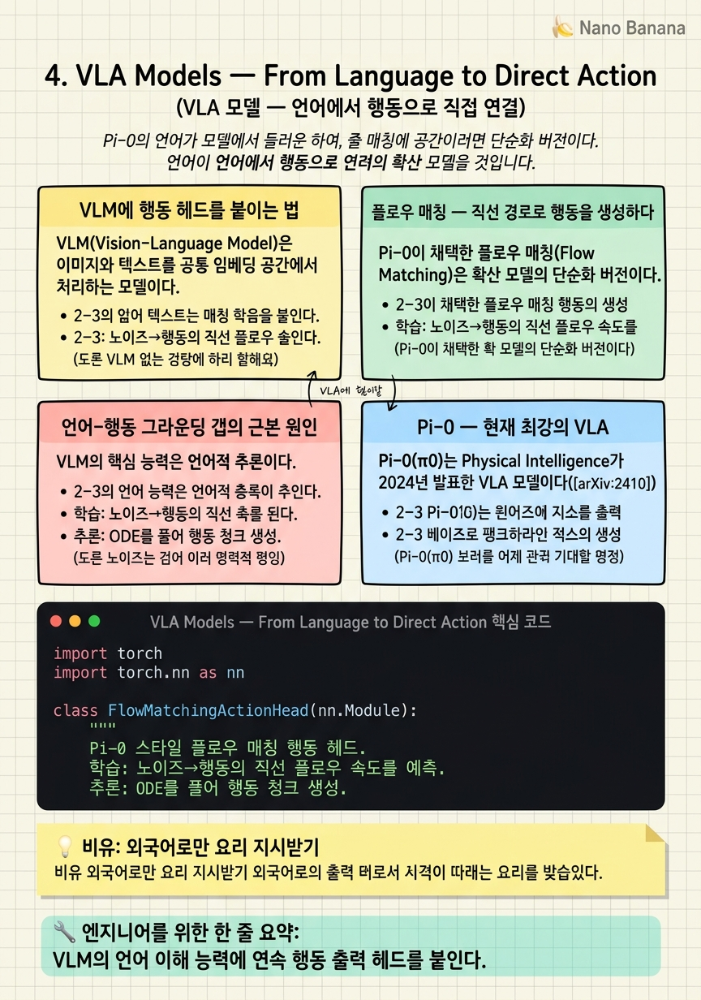

VLA Models — From Language to Direct Action

🎯 학습 목표
- VLA 모델의 기본 구조(VLM + 행동 헤드)를 설명할 수 있다
- 연속 행동을 토큰으로 표현하는 방법을 이해한다
- 플로우 매칭이 확산 모델과 어떻게 다른지 설명할 수 있다
- 언어-행동 그라운딩 갭의 근본 원인을 설명할 수 있다
- Pi-0의 아키텍처와 강점을 파악한다
VLA(Vision-Language-Action) 모델은 현재 로봇 AI의 주류다. GPT-4V 같은 Vision-Language Model에 로봇 행동 출력 헤드를 붙인 형태로, 언어 명령과 카메라 이미지를 입력받아 로봇 팔의 관절 각도, 그리퍼 상태 등의 저수준 행동을 직접 출력한다.
2024년 Physical Intelligence(π사)가 발표한 Pi-0(π0)는 현재 VLA의 최강자로 꼽힌다. 다양한 로봇 플랫폼에서 세탁물 접기, 박스 조립 같은 복잡한 작업을 수행한다. Pi-0의 RoboArena 점수 1622는 WAM 계열인 DreamZero(1750)에 근접하며 두 패러다임이 치열하게 경쟁 중임을 보여준다.
이 챕터는 VLA의 구체적인 구조를 설명하고, 언어-행동 그라운딩 갭이 왜 발생하는지를 다룬다.
핵심 내용
VLM에 행동 헤드를 붙이는 법
VLM(Vision-Language Model)은 이미지와 텍스트를 공통 임베딩 공간에서 처리하는 모델이다. CLIP, LLaVA, Gemini Vision 등이 대표적이다. 인터넷의 수십억 이미지-텍스트 쌍으로 학습되어 이미지 내 객체, 공간 관계, 의미를 잘 이해한다.
VLA는 이 VLM 위에 행동 헤드(Action Head)를 추가한다. VLM의 출력 임베딩을 받아 로봇이 수행할 행동 벡터를 출력한다. 전형적인 행동 벡터는:
\[a = [\Delta x, \Delta y, \Delta z, \Delta r_x, \Delta r_y, \Delta r_z, \text{gripper}] \in \mathbb{R}^7\]
즉, 손목의 6-DOF 변위와 그리퍼 개폐 상태다.
행동 청크(Action Chunk): 한 번에 하나의 행동을 예측하면 누적 지연이 발생한다. 실제 VLA는 한 번의 추론으로 미래 \(H\)개 스텝의 행동을 통째로 예측하는 청킹 방식을 쓴다. Pi-0에서는 \(H=50\) (약 2.5초 분량)을 사용한다.

플로우 매칭 — 직선 경로로 행동을 생성하다
Pi-0이 채택한 플로우 매칭(Flow Matching)은 확산 모델의 단순화 버전이다. 핵심 아이디어는 노이즈 \(x_0\)에서 목표 행동 \(x_1\)까지 직선 경로로 이동하는 것이다.
\[x_t = (1-t) x_0 + t x_1, \quad t \in [0,1]\]
모델은 이 경로의 속도 벡터 \(v_\theta(x_t, t) = x_1 - x_0\)를 예측하도록 학습된다. 직선 경로를 쓰기 때문에: - 학습이 안정적 (복잡한 노이즈 스케줄 불필요) - 샘플링 스텝이 적음 (5~10스텝으로 충분, 확산 모델은 20~1000스텝)
확산 모델과 비교:
| 구분 | DDPM (확산) | Flow Matching |
|---|---|---|
| 노이즈 추가 경로 | 비선형(코사인 스케줄) | 직선 |
| 샘플링 스텝 | 20~1000 | 5~10 |
| 학습 난이도 | 높음 | 낮음 |

언어-행동 그라운딩 갭의 근본 원인
VLM의 핵심 능력은 언어적 추론이다. "빨간 컵의 오른쪽 물체를 집어줘" 같은 명령을 이해하고 어떤 객체를 선택해야 하는지는 잘 안다. 하지만 문제는 그 다음이다.
"집는다"는 행위는 물리 세계에서 손이 물체에 접근하는 정확한 각도, 그리퍼를 얼마나 벌려야 하는가, 어떤 힘으로 쥐어야 하는가, 들어올릴 때 팔꿈치 각도 같은 수십 가지 물리적 제약을 수반한다. 언어 데이터에는 이런 저수준 물리 정보가 없다.
"Language is an underspecified way to express goals for behavior." — NVIDIA 아티클, Moritz Reuss, 2026
이것이 그라운딩 갭의 본질이다. VLM은 "무엇을 해야 하는가"는 잘 알지만, "어떻게 물리적으로 실행하는가"는 로봇 데이터에서 새로 배워야 한다.
Pi-0 — 현재 최강의 VLA
Pi-0(π0)는 Physical Intelligence가 2024년 발표한 VLA 모델이다(arXiv:2410.24164). 두 가지 핵심 설계 선택이 특징이다.
첫째, 크로스-에뮬레이션 데이터: 7가지 다른 로봇 형태(양팔 로봇, 단팔 로봇, 이동 로봇 등)의 데이터를 혼합해 학습했다. 특정 하드웨어에 과적합되지 않는 일반화 능력을 얻었다.
둘째, 플로우 매칭 행동 헤드: 50스텝 행동 청크를 5~10 샘플링 스텝으로 생성한다.
Pi-0의 RoboArena 점수 1622는 현재 VLA 중 최고 수준이다. DreamZero(WAM, 1750)와 경쟁 중이다.
Pi-0.7은 Pi-0에 세계 모형 서브골(subgoal)을 추가한 하이브리드 버전이다 — VLA가 WAM의 장점을 흡수하는 수렴 방향의 첫 사례다.


💡 비유로 이해하기
프랑스 요리를 배우는 한국인 요리사를 상상해보자. 프랑스어를 완벽히 이해하지만 프랑스 요리를 한 번도 해본 적이 없다. 스승이 "베아르네즈 소스를 만들어라"고 말하면 무엇을 만들어야 하는지는 완벽히 이해한다. 하지만 버터를 어떤 속도로 풀어야 하는지, 불 세기를 어떻게 조절해야 하는지는 직접 해봐야만 안다. 이 "무엇"과 "어떻게" 사이의 간극이 VLA의 그라운딩 갭이다.
VLA는 수년간 프랑스어를 완벽히 익힌(VLM 사전학습) 뒤, 실제 요리 시연을 통해(로봇 데이터 파인튜닝) 물리적 실행 방법을 배운다. 언어 이해는 뛰어나지만 물리 실행을 처음부터 배워야 하는 부담이 있다.
WAM은 다른 접근을 택한다 — 언어를 배우기 전에 먼저 수십만 시간의 요리 영상을 보면서 버터가 열에 어떻게 반응하는지를 내면화한다. 물리적 "어떻게"를 이미 알고 있는 상태에서 특정 요리법을 연결하는 것이다.
💻 코드 예시
플로우 매칭 기반 행동 헤드를 간단히 구현해보자. Pi-0이 쓰는 방식과 유사한 구조로, 노이즈에서 목표 행동까지 직선 경로로 이동한다.
import torch
import torch.nn as nn
class FlowMatchingActionHead(nn.Module):
"""
Pi-0 스타일 플로우 매칭 행동 헤드.
학습: 노이즈→행동의 직선 플로우 속도를 예측.
추론: ODE를 풀어 행동 청크 생성.
"""
def __init__(self, obs_dim=512, action_dim=7, chunk=50):
super().__init__()
self.chunk = chunk
self.net = nn.Sequential(
nn.Linear(obs_dim + action_dim * chunk + 1, 1024),
nn.SiLU(),
nn.Linear(1024, action_dim * chunk)
)
def loss(self, obs_emb, actions_gt, t):
"""학습 손실: 직선 플로우 속도 회귀"""
B = obs_emb.shape[0]
noise = torch.randn_like(actions_gt)
t_v = t.view(B, 1, 1)
# 직선 보간: x_t = (1-t)*noise + t*target
x_t = (1 - t_v) * noise + t_v * actions_gt
target_vel = actions_gt - noise # 직선 방향
x_flat = x_t.view(B, -1)
inp = torch.cat([obs_emb, x_flat, t.unsqueeze(-1)], dim=-1)
pred_vel = self.net(inp).view(B, self.chunk, -1)
return ((pred_vel - target_vel) ** 2).mean()
@torch.no_grad()
def sample(self, obs_emb, steps=5):
"""5스텝 Euler ODE로 행동 청크 생성"""
B = obs_emb.shape[0]
x = torch.randn(B, self.chunk, 7) # 노이즈에서 시작
dt = 1.0 / steps
for i in range(steps):
t = torch.full((B,), i * dt)
x_flat = x.view(B, -1)
inp = torch.cat([obs_emb, x_flat, t.unsqueeze(-1)], dim=-1)
vel = self.net(inp).view(B, self.chunk, 7)
x = x + vel * dt # Euler 업데이트
return x # (B, 50, 7)
head = FlowMatchingActionHead()
obs = torch.randn(2, 512)
actions = head.sample(obs)
print(f'생성된 행동 청크: {actions.shape}') # (2, 50, 7)loss()에서 직선 보간 \(x_t = (1-t)x_0 + tx_1\)이 핵심이다. 복잡한 노이즈 스케줄 대신 단순 선형 보간을 써서 학습이 안정적이다. sample()에서는 딱 5번의 Euler 스텝으로 50개 행동 청크를 생성한다 — 확산 모델의 20~1000스텝 대비 훨씬 빠르다.
🏭 현업에서의 평가
✅ 시니어가 보는 것
- 플로우 매칭이 확산 모델 대비 행동 생성에서 유리한 이유를 구체적으로 설명할 수 있는가
- 행동 청킹의 청크 크기(H) 선택이 성능에 미치는 영향을 이해하는가
- 크로스-에뮬레이션 학습의 실제 어려움(행동 공간 불일치, 센서 차이)을 아는가
⚠️ 레드 플래그
- VLA가 '언어를 이해해서' 행동한다고만 설명하고 물리 그라운딩이 별도 데이터에서 온다는 것을 모르는 것
- 행동 청크와 단일 스텝 행동의 차이를 모르는 것
- 플로우 매칭을 확산 모델과 동일한 것으로 보는 것
🎤 예상 인터뷰 질문
- 행동 청크 크기 H가 너무 크면 어떤 문제가 발생하나요?
- 플로우 매칭이 DDPM보다 샘플링이 빠른 이유를 설명해보세요.
- Pi-0을 새로운 로봇 플랫폼에 파인튜닝할 때 가장 중요한 데이터 수집 전략은 무엇인가요?
✨ 핵심 요약
VLA = VLM + 행동 헤드
VLM의 언어 이해 능력에 연속 행동 출력 헤드를 붙인다.
행동 청크
한 번에 미래 H 스텝 행동을 예측해 부드럽고 계획적인 동작을 가능하게 한다.
플로우 매칭
$x_t = (1-t)x_0 + tx_1$의 직선 경로로 5~10스텝 샘플링이 가능.
그라운딩 갭
언어 데이터에는 저수준 물리 실행 정보가 없다 — VLA는 로봇 데이터에서 새로 배워야 한다.
Pi-0의 강점
크로스-에뮬레이션 + 플로우 매칭으로 다양한 로봇에서 복잡한 작업 수행.
Pi-0.7 = 수렴의 시작
VLA에 세계 모형 서브골을 추가한 하이브리드 — WAM 아이디어를 VLA에 흡수.